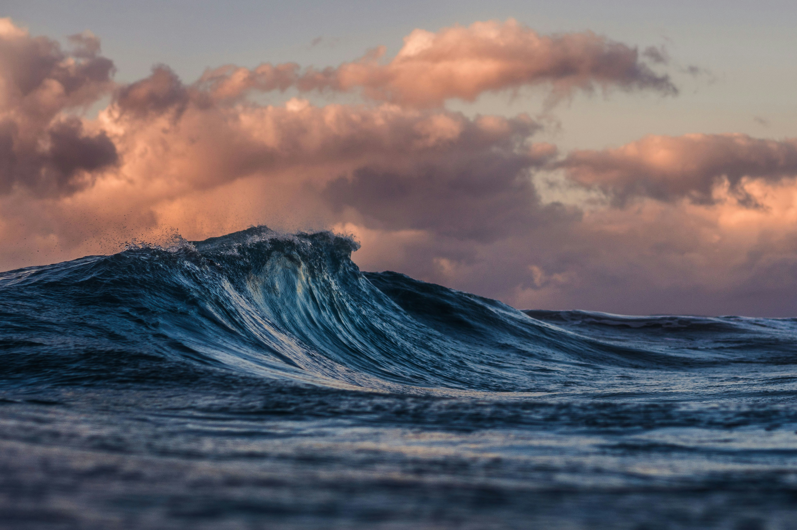
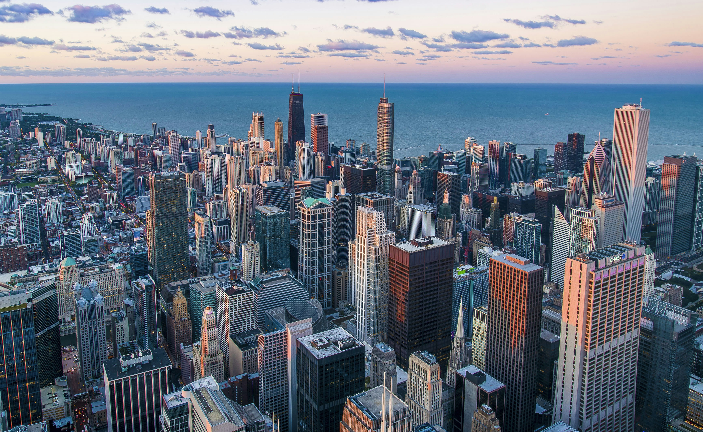

Places worth seeing.
We keep a slow list — places that ask for an early start and a longer detour. A lake like cold glass, a road with nothing at either end.
Selected frames






Next issue: three weeks of ferries, a borrowed tent, and the argument about whether a lighthouse counts as a destination.